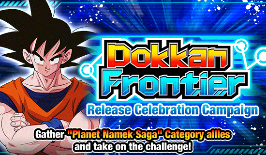
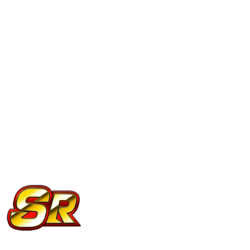

O LANÇAMENTO DO DOKKAN FRONTIER

Se uma simples atualização visual já foi chamada de "Dokkan 2", seria esse o "Dokkan 3"? "Dokkan 5"? "Dokkan 6,7"? 😭
A atualização 6.0.0 trouxe pro Dokkan a nova dificuldade "Survival", onde cada personagem tem sua própria barra de HP e times são divididos em 2
Não é só uma ideia muito interessante e inteligente, mas também vai garantir que as pessoas inventem novas estratégias e usem personagens diferentes pra completar certas fases
Eu não sei qual o motivo de isso não ter sido introduzido no Décimo Primeiro Aniversário, mas o que importa é que está aqui agora.
